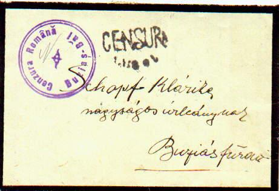
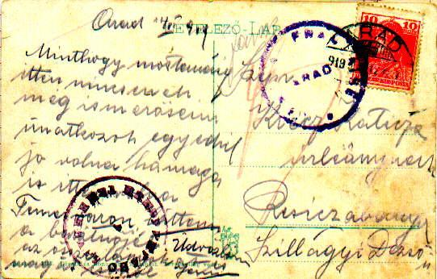

Following WW1, three of the former Austro-Hungarian territories became part of Romania (Bucovina, Transylvania and the Banat). The Romanian administrations were quickly established in each of these areas giving rise to its own local postal history. In all these new provinces civilian mail censorship was established. Romania had complete control of this in Bucovina and Transylvania but in the Banat,
two military forces allied to the Romanians, namely the French and Serbs, were interposed between the Hungarian and Romanian troops. The French and Serbs set up censorship offices prior to the arrival of the Romanians. The brief war between Romania and the Hungarian Soviet Republic (April - July 1919) led to the temporary occupation of Hungary and a few censorship offices were set up there.
A.1. Romanian double
censor markings 
A.2.
Serbian double censoring
There is only one possibility involving censoring offices from
today's Romania: TIMIŞOARA and SÂNNICOLAUL MARE
B.1.1. Serbian-French Censoring (S-F/ F-S)
.Here (below) one finds a combination between a Serb office in BW and a French one in Arad. These covers occur in the following ways. Mail that circulated between BE or BW and Arad (after May 25 censored according to General Tournadre's decree as described above, see #2.3).

 B.1.2. French-Romanian censoring (F-R or R-F).
This can be found on mail circulated between Arad (French censoring) to the
Romanian occupied territories (T, MZ): After May 25th and
until July 10, 1919 the combination should not be found because of the clear
delineation of responsibilities between the French and Romanians in Arad (the
French were not allowed to censor mail from or to Romanian territories, see
#2.3). However, one does find such covers from the first days of July 1919.
This was towards the end of the French occupation in Arad, when the decree
was not followed.
B.1.2. French-Romanian censoring (F-R or R-F).
This can be found on mail circulated between Arad (French censoring) to the
Romanian occupied territories (T, MZ): After May 25th and
until July 10, 1919 the combination should not be found because of the clear
delineation of responsibilities between the French and Romanians in Arad (the
French were not allowed to censor mail from or to Romanian territories, see
#2.3). However, one does find such covers from the first days of July 1919.
This was towards the end of the French occupation in Arad, when the decree
was not followed.
B.1.3.
Serbian-Romanian censoring (S-R or R-S).
Combinations between Serb markings from BW and Romanian ones from T
are quite unlikely during the "a" period and possible during the "b" period
(see an example here). Combinations between Serb markings from BW and
Romanian ones from OR are unlikely during the ‘a’ period, and possible, but
not yet seen during the ‘b’ period (they have to be very rare).
 Combinations between Serb markings from BW and Romanian ones from MZ are
possible too, but we know up to now only the mixture Timisoara + Măru Rosu (Măru
Rosu functioned until July 1919 (?) in Mezöhegyes – MZ1, then it was moved
to Arad). See an example here.
Combinations between Serb markings from BW and Romanian ones from MZ are
possible too, but we know up to now only the mixture Timisoara + Măru Rosu (Măru
Rosu functioned until July 1919 (?) in Mezöhegyes – MZ1, then it was moved
to Arad). See an example here.
Combinations between Serb markings from BW and Romanian from Lugoj (BE) were
possible only for 2-3 months (June-July 1919). We know until now only the
combination Timisoara + Lugoj. Not shown here.